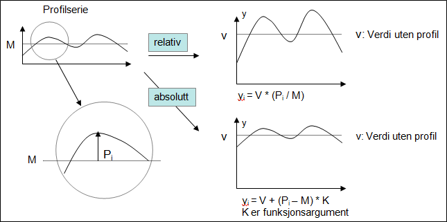

Terms used in the functions
The functions in this category are used to calculate time series with a different time resolution than the source. The result can be in the following resolution:
Table 1: RESOLUTION symbol values
| RESOLUTION symbol | Description |
|---|---|
| VARINT | Break point series, i.e. free distance between each point of time with value. |
| MIN15 | Fixed 15 minutes interval |
| HOUR | Fixed hour interval |
| DAY | Fixed day interval |
| WEEK | Fixed week interval |
| MONTH | Fixed month interval |
| YEAR | Fixed year interval |
Table 2a: TRANSMETHOD Symbol values valid in transformation to coarser time resolution
| TRANSMETHOD Symbol | Description |
|---|---|
| SUM SUMV |
The sum of the values included in the base for this value. Does not consider how long the values are valid, i.e. a break point series with two values in the current interval that will give the sum of these two values. |
| SUMI | Integral based sum with resolution second. Calculates the sum of value multiplied with number of seconds each value is valid. Value equal 1 at the start of the day will give 86400 as day value if the base is one break point series and 3600 if this is an hour series with only one value on first hour. |
| MEAN AVG or AVGV AVERAGE |
For fixed interval series. Sum of all values in accumulation period divided by number of values in the accumulation period (24 for hour series that is transformed to day series). For break point series: Mean value of the values included in the base for this value. Does not consider how long the values are valid, i.e. a break point series with two values in the current interval that will give the mean value of these two values. |
| AVGI | Integral based mean value, i.e. considers how much of the accumulation period that a given value is valid (to next value that can be NaN for a fixed interval series). This value is presented as mean value in the summary part of the presentation in Table. |
| FIRST | First value in the accumulation period. For break point series this is the functional value at the start of the accumulation period, unless there exist an explicit value. Please note! For fixed interval series it is the first value not being NaN in the accumulation period. |
| LAST | Last value in the accumulation period. For break point series this is the functional value at the end of the accumulation period, unless there exist an explicit value. Note! For fixed interval series it is the last value not being NaN in the accumulation period. |
| MIN | Smallest value in the accumulation period. |
| MAX | Largest value in the accumulation period. |
| GSUM | This transformation code requires that you use TRANSFORM version with resolution given as a break point series (version R2) and that the base series is fixed interval. Same as SUM but with different period handling. In this case the period is not adjusted with regards to resolution. Here you can e.g. transform to week value based on Wednesday to Wednesday or inhomogeneous periods given by points of time on a given break point series. This transformation code requires that you use TRANSFORM version with resolution given as a break point series (version R2). |
| GMEAN | See GSUM. Same properties, but here mean value for period is calculated. |
Observe that in case the transformation method is integral based (for example ACCAVGI and ACCAVGI_NOW), the source series must have curvetype staircase start of step.
For accumulation with base in break point series, you have the following particular methods that consider current period in a special way.
Table 2b: Special accumulation methods
| TRANSMETHOD Symbol | Description |
|---|---|
| ACCVOLUME | Transforms meter reading values with random solution to a fixed interval period. This is done by calculating the functional value at interval points of time, calculate integral based mean for the resolution interval and then change up to next interval. Note! There is also a separate function to do this transformation, @Metered2Volume |
| ACCM2V | See ACCVOLUME |
Table 3: TRANSMETHOD symbol values valid in transformation to finer time resolution
| TRANSMETHOD Symbol | Description |
|---|---|
| SUM | The sum of the result values for expanded period equals the value in the input data series. |
| MEAN AVERAGE |
The mean values of the result values for expanded period equals the value in the input data series. |
Explicit default transformation
If you state transformation code DEFAULT, the system will decide method from value type and value unit on the series. These are the rules that are taken into account:
| TRANSMETHOD equals DEFAULT Unit/type |
Description |
|---|---|
| Time series type of type linear | Here the first value in the base series is used, i.e. code FIRST |
| Value unit Celsius, MM3, MW MWh/h, kWh/h Meter %, % of max, % of normal M3/s, MW/Hz NOK/MWh, SEK/MWh, EUR/MWh Liter/s, Liter/s/km2 Meter/s |
Here mean value is used as method. AVG for fixed interval series and for break point series AVGI is used, integral based mean value. |
| Value unit mm, cm And value type: snow depth, snow water equivalent ground water level, soil moisture |
Here mean value is also used as method. For break point series AVGI is used, integral based mean value. |
| Otherwise when accumulating | Mean value method AVGI for break point series and SUM for fixed interval series. |
| When transforming to a finer resolution | |
| General | SUM, i.e. value is divided on number of points in this that covers new resolution |
| MW, kW and more | Mean value (AVG) |
If the environment variable ICC_TSRSERVER_VARINT_SUMI_ON_ACCUMULATE is defined, break point series that do not have step type linear will always be accumulated with method SUMI.
Implicit default transformation
A time series report definition can include an attribute stating that the presentation e.g. should have week resolution even if the report only consists of hour series. From presentation in table you can also select a different resolution. It is i.e. necessary to transform hour values to week values without stating how this is done through a calculation expression. This is called implicit default transformation.
Basically the same rules as described under Explicit default transformation are used. But you can influence how this should happen by setting attributes on columns. This is controlled by the attribute TYPE with value {method}, where method can be one of these values:
ACCSUM, ACCSUMI,
ACCAVG, ACCAVGI, ACCMEAN
ACCFIRST, ACCLAST,
ACCMIN, ACCMAX,
ACCLAST_NOW, ACCAVGI_NOW, ACCSUMI_NOW
These are the same codes defined in TRANSMETHOD but with prefix ACC. The explanation for the symbols is the same as the corresponding TRANSMETHOD documentation.
Example on transformation attribute in a column definition:
TYPE {ACCMIN}
Mask series
In some of the functions the term mask series is used. This is a time series where you separate between the values NaN, 0 and all other values. NaN and 0 are logically perceived as logically untrue value (FALSE) and all other values are perceived as logically true value (TRUE). A mask series can e.g. be used to define which hours that should be included in the calculation of a day value with method SUM.
Profile series
In some of the functions the term profile series is used. This is a time series that can be used in transformation to finer resolution, e.g. from day to hour. In this function you can either use mean value or sum consideration, i.e. if the mean value from calculated values should equal the value they were derived from or if it is the sum of the values that should equal the start point value.
Handling profile
The profile series can be used in two ways, relative or absolute. Current functions exist in two versions, one using relative profile and one using the profile directly (called absolute). The latter version can be scaled using a coefficient that is an argument to the function.

The figure shows that use of relative profile will strengthen the variation if the mean value for the input data series (V) is large compared to the mean value on the profile series (M). By using absolute profile the variation will equal the profile series, possibly adjusted with a factor different from 1 that is given as first argument to the functions using absolute profile.
Input data series
In all functions the first time series is argument to the time series to be converted in one way or the other.